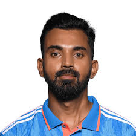
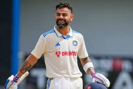
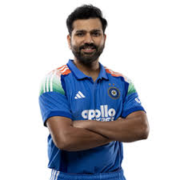
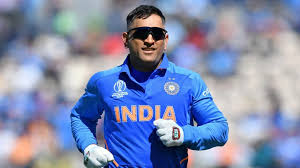

ICC
THE BEST BATSMEN IN THE WORLD
Members
Kl Rahul

Kl Rahul
Kannanur Lokesh Rahul (born April 18, 1992) is a highly talented Indian wicket-keeper batsman known for his technical elegance and adaptability across formats.
Joh

Virat Kohli.
Virat Kohli (born 5 November 1988) is an Indian international cricketer and former captain, widely regarded as one of the greatest batsmen in modern history. A right-handed batter for RCB and India, he is known for his aggressive style, exceptional run-chasing ability, and high fitness standards.
JohnDoe

Rohit Sharma.
Rohit Gurunath Sharma (born 30 April 1987) is an Indian international cricketer and the former captain of the India national cricket team in all formats of the game. He is a right-handed top-order batter.
JohnDoe

MSD
Mahendra Singh Dhoni (born July 7, 1981) is a legendary Indian cricketer and captain, renowned for leading India to victory in the 2007 T20 World Cup, 2011 ODI World Cup, and 2013 Champions Trophy..